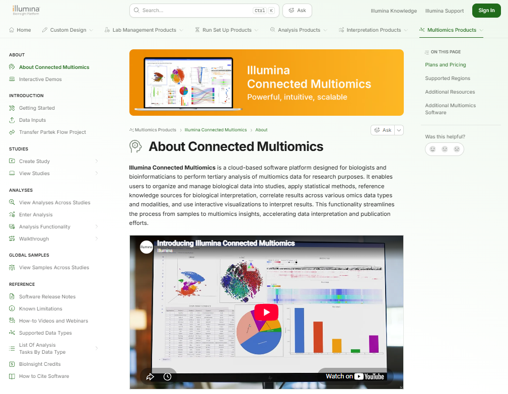

02 · CONNECTED MULTIOMICS · POST-ACQUISITION PRODUCT INTEGRATION
Turning an acquisition into one connected product experience.
How I helped bring two scientific products together across requirements, usability, verification and Early Access readiness.
RoleTechnical Product Manager
StagePre-release → Early Access
ContextPost-acquisition integration
FocusScientific workflows · quality · UX
“This could not have happened without your contribution.”
Feedback from a test engineering partner who later recognized my contribution with a spot award.
01 · The problem
Two products needed to behave like one experience.
The integration challenge was bigger than connecting software. Scientific workflows, requirements, UX, testing and customer enablement all had to converge into a coherent experience for researchers.
PRODUCT QUESTIONHow do we make two products feel like one trustworthy workflow for scientists?
02 · My role & impact
I worked across product definition, quality and customer readiness.
I translated complex multiomics workflows into detailed product requirements, partnered with Quality and Test on end-to-end traceability and verification, and owned customer-facing enablement from documentation through product demos.
Product requirementsScientific workflowsDesign inputsVerification & validationUATUsability researchDocumentationCustomer demos
03 · The solution
Connect the workflow, then close the gaps around it.
I treated release readiness as more than working code. The experience needed to be understandable, testable and usable across workflows including spatial, single-cell RNA and proteomics.
Translate the science
Turn researcher workflows and user needs into explicit product requirements.
Build traceability
Connect design inputs and expected behavior to verification with Quality and Test.
Test the experience
Use UAT and usability feedback to find friction that requirements alone could miss.
Prepare customers
Create documentation and demos so Early Access users could understand the integrated workflow.

CUSTOMER ENABLEMENT
I wrote the entire documentation site.
To make the product usable beyond the interface itself, I wrote the Connected Multiomics documentation website end to end, turning product behavior and scientific workflows into a resource customers could use to learn the product and complete their work independently.
See the real thing ↗04 · Key product decisions
The tradeoffs that shaped the product.
DECISION 01Keep the UI simple, while preserving power through rich APIs.+
We had to decide whether the interface should expose a large number of controls and capabilities or guide scientists through a simpler experience. More options could make the UI feel more powerful, but they also increased the amount a user had to understand before completing a workflow.
WHAT WE LEARNED
In customer interviews, we showed users the product without giving them directions and asked them to find and complete tasks on their own. We observed that a simpler interface made the experience easier to navigate independently.
THE DECISION
Keep the UI intentionally simple and intuitive for common workflows, while exposing richer capabilities through APIs for users who needed more control.
DECISION 02Launch a focused Early Access MVP instead of supporting every sample type at once.+
Connected Multiomics needed to support different scientific modalities, including spatial, single-cell RNA and proteomics. Supporting every sample type in the first release would broaden the product, but it would also extend the time required to validate workflows and get the product into customers' hands.
THE TRADEOFF
Broader modality coverage at launch versus learning sooner from real users with a smaller, well-defined set of supported workflows.
THE DECISION
Release an Early Access MVP with a limited set of sample types, validate the experience with customers, then expand modality support over time.
05 · Skills & takeaways
What Connected Multiomics taught me about integration product management.
01Scientific empathy
My biology background helped me reason from the research workflow rather than treating domain complexity as an abstraction.
02Quality partnership
Requirements get stronger when Product, Quality and Test align on expected behavior and traceability early.
03Proactive ownership
When a customer-facing gap had no obvious owner, I treated it as a product problem to solve.
04Usability research
Watching users work revealed friction that was invisible in a requirements document.